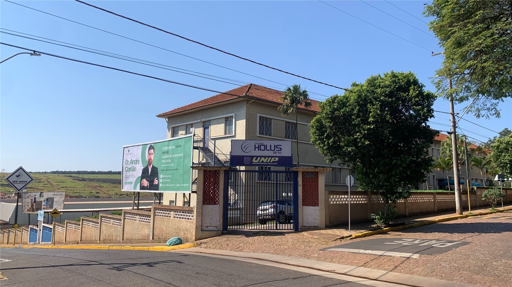
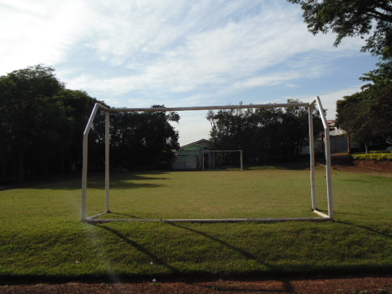
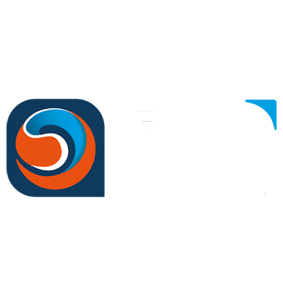

Uma escola que acompanhou o crescimento da cidade, em um prédio de importância histórica para São Manuel.
O Colégio Holus Objetivo, localiza-se no centro de São Manuel, prédio de importância histórica para a cidade e para o apostolado da Consolata.
No Holus, a modernidade convive com o estilo tradicional de uma construção que conserva o valioso passado de uma escola que acompanhou o crescimento da cidade.


Inicia-se com o Seminário Filosófico e Teológico “Santa Teresinha do Menino Jesus”, em 1947, abrigando os primeiros seminaristas que vieram de Rio do Oeste (SC), para aqui estudarem.
Em 13 de dezembro de 1988, o Seminário foi desativado.
Voltou a ser ocupado de 1995 à 1997, pela EEPG “Dr Augusto Reis”, por conta de sua reforma devido a seu tombamento.
Novamente o prédio ficou desocupado, e em 2.004, se instalou o Colégio Seta, com o Ensino Médio.
Em agosto de 2005, chegou também o Ensino Fundamental I e II.
No ano de 2006, adquirido pelo professor Ary Alves da Silva Júnior, passou a ser denominado Colégio Holus Objetivo — hoje, Colégio Holus FTD.
E em 2007, iniciou-se a Educação Infantil.
O FTD Sistema de Ensino se apresenta como uma ferramenta, que, a partir do momento em que é incorporada pelos educadores, atinge seu objetivo de colaborar na melhoria do processo de ensino-aprendizagem. A proposta do FTD Sistema de Ensino é apresentar os conteúdos das diferentes disciplinas num único material, conectados entre si. Assim, ao final do curso, o aluno terá formado um conjunto equilibrado de conhecimentos.
Ao adotar o FTD Sistema de Ensino você tem a certeza de estar utilizando um sistema que já nasceu com o DNA da FTD, uma das maiores editoras do país. Uma empresa dedicada integralmente à formação de crianças e jovens de todo o Brasil há mais de 100 anos, concebendo e desenvolvendo o que há de mais eficiente na área de ensino, tanto para alunos quanto para professores.

Com uma busca marcada por dedicação, arrojo, talento e visão do futuro, a FTD consegue aliar sua experiência e tradição às inovações surgidas nos últimos tempos. Prova disso é o FTD Sistema de Ensino, que traz uma metodologia de qualidade para a formação dos alunos, preparando-os para os anos de estudo e para o futuro exercício de sua cidadania.
O FTD Sistema de Ensino é um projeto unificado que visa ser parceiro da escola e do docente na busca pelo ensino de qualidade. Por oferecer informação, treinamento e eficiência no domínio do conteúdo, o FTD Sistema de Ensino cumpre sua missão de apoiar as escolas contribuindo para a formação dos docentes brasileiros, ajudando-os a ampliar seus saberes e a refletir sobre o fazer pedagógico, favorecendo, assim, o sucesso no aprendizado dos alunos.
A escola parceira conta com um pacote de produtos e serviços testado e aprovado, pois quem escreve o material didático são os professores que estão em sala de aula. É por isso que, ao adotar o FTD Sistema de Ensino, sua escola terá a segurança de que ele nasceu de uma Editora que é sinônimo de educação e conhecimento
Frère Théophane Durand, Irmão Superior-Geral do Instituto Marista de 1883 a 1907
A FTD Educação nasceu no Brasil, em 1902, ampliando a atuação dos Irmãos Maristas que estavam no país desde 1897 na direção de vários colégios. As iniciais da Editora FTD são uma homenagem a Frère Théophane Durand, Irmão Superior-Geral do Instituto Marista de 1883 a 1907.
O Instituto Marista se dedica à Educação de crianças e jovens com a Missão declarada de tornar Jesus Cristo conhecido e amado. No Brasil, o Instituto é organizado por meio de três unidades administrativas e uma delas é o Grupo Marista, do qual a FTD faz parte.
Quando Frère Théophane Durand assumiu a direção do instituto, já existiam livros de Gramática Francesa e de História da França, além da cartilha escrita pelo Padre Champagnat (fundador do Instituto Marista) e algumas obras para o ensino religioso. Em sua gestão, incentivou os Irmãos a escrever livros escolares para as demais disciplinas. Esses livros passaram a integrar a coleção que recebeu o título de Coleção de Livros Didáticos FTD.
Muitos desses livros foram adotados tanto por escolas Maristas como por outras redes de escolas particulares e públicas na França e nos países onde os Maristas passaram a trabalhar. Em muitos dos países em que eles se instalaram havia deficiência de editoras de didáticos. A solução foi estender a FTD francesa a esses países. Assim, no final do século XIX e na primeira metade do século XX, a marca FTD esteve presente em países como Inglaterra, Bélgica, Alemanha, Itália, Espanha, Estados Unidos, México, Peru, Argentina e até China, além de outros.
A sigla FTD foi registrada como marca comercial no momento em que houve necessidade de abrir uma empresa editorial, por volta de 1890. A empresa FTD passou a administrar oficial e legalmente as edições já existentes e ampliou o número de obras novas. Essas iniciais passaram a figurar em todas as capas dos livros publicados pelos Irmãos Maristas.
Em 1897, Frère Théophane Durand determinou a vinda dos primeiros Irmãos Maristas para o Brasil, e com eles vieram também os livros da FTD, que já faziam parte da rotina dos colégios Maristas em diversos países. Logo surgiram traduções e adaptações de várias dessas obras, bem como novos livros passaram a ser escritos dentro das exigências específicas da cultura brasileira.
Em 1902, os Maristas publicaram o primeiro livro FTD no Brasil: Exercícios de Cálculo sobre as Quatro Operações, acompanhado de problemas, traduzido e adaptado pelo Irmão Andrônico, que foi diretor de colégios Maristas no Brasil. A partir daí, a cada ano com mais intensidade, os Irmãos dedicaram-se às tarefas de traduzir os livros de currículo comum à França e ao Brasil, de criar textos para o ensino da Língua Portuguesa, de História e de Geografia do Brasil e de produzir os primeiros atlas escolares brasileiros.
O Irmão Isidoro Dumont (1874-1941), sucessor do Irmão Andrônico na direção do Colégio do Carmo, em São Paulo, foi figura-chave da FTD nos seus primeiros 40 anos no Brasil. Dedicou-se pessoalmente à produção de livros novos de Aritmética, Álgebra, Geometria, Trigonometria, Logaritmos e outros. Tudo sempre de acordo com o esquema denominado Método FTD, que incluía a edição de Livros do Mestre. O Livro do Mestre passou a ser visto como um guia seguro que trazia economia de tempo para os professores e farto material para os alunos trabalharem; por isso, os livros da FTD foram adotados pela maioria dos colégios. Era difícil encontrar uma escola brasileira que não adotasse vários livros da FTD, tanto na rede particular como na rede pública.
Dentre os livros que merecem destaque está Novas Taboas de Logarithmos, que passou a ser visto como a obra-símbolo da FTD. Quando alguém tinha dificuldade de situar a editora, bastava dizer: “Aquela editora do livro de logaritmos!”. Isso era suficiente para que o nome FTD fosse imediatamente lembrado.
Foi assim que a Editora FTD se tornou, no século passado, a mais completa editora de livros didáticos do Brasil e a primeira a cobrir todas as áreas de ensino. As novas editoras brasileiras, criadas a partir dos anos 1950, seguiram os passos da FTD e se tornaram importantes no final do século. Junto com a FTD, exercem um papel relevante na educação nacional.
A Universidade Paulista – UNIP é uma das maiores e mais conceituadas instituições de ensino superior do País, e possui uma posição consolidada na Educação a Distância – EaD. Parte de um dos mais prestigiados grupos educacionais do Brasil, o OBJETIVO, conta com a tradição e a experiência de mais de 50 anos dedicados à oferta de educação de qualidade.
A UNIP EaD está, desde 2004, credenciada pelo MEC por meio da Portaria MEC 3.633/2004. Conta com mais de 900 polos de apoio presencial para a oferta de cursos de graduação e pós-graduação, beneficiando os alunos em todos os estados brasileiros.
Na metodologia EaD, o SEI (On-line), com horários mais flexíveis o aluno pode acessar as aulas a qualquer momento e local, por meio de computadores, tablets ou celulares .Os alunos dos cursos de graduação da EaD contam com material didático impresso gratuito, ambiente acadêmico repleto de ferramentas que potencializam a aprendizagem e suporte de uma tutoria altamente qualificada disponível 24 horas por dia e tutoria presencial no Polo , o diploma é o mesmo dos cursos presenciais.
Além disso, a UNIP EaD é reconhecida pelas empresas no Brasil como uma das mais respeitadas universidades do País. Isso garante ao aluno um reconhecimento de sua formação e capacidade de desenvolver com excelência sua profissão.
Os cursos da UNIP na modalidade de Educação a Distância (EaD) podem ser oferecidos por meio de diferentes metodologias e com uso de tecnologias variadas. O conteúdo curricular é disponibilizado em plataforma digital e/ou material impresso. A interação com a tutoria será efetivada via internet e/ou por outro meio de comunicação.
Entre no site da UNIP para conhecer “nossos cursos” de graduação ou pós-graduação: (www.unip.br/ead)
Procure a aba de “Inscreva-se”;
Selecione o curso EaD: (a distância)
Preencha com seus dados pessoais (CPF, Nome, Telefone e e-mail);
O curso desejado no Polo São Manuel;
Por último, a data da prova.
Neste ambiente de estudo, o aluno deverá responder a questionários, acessar fóruns, secretaria virtual, enviar e-mail para todos os tutores a distância, coordenadores, professores e ter acesso a todos os serviços oferecidos pela instituição.
Consultar o Polo UNIP São Manuel (Colégio Holus)
Av. Irmãs Cintra, 961 – Tel. (14) 3841 5060 / whats (14) 999013965
Em 13 de dezembro de 1988, o Seminário foi desativado, e voltou a ser ocupado de 1995 à 1997, pela EEPG “Dr Augusto Reis” , por conta de sua reforma devido a seu tombamento. Novamente o prédio ficou desocupado, e em 2.004, se instalou o Colégio Seta, com o Ensino Médio.
Em agosto de 2005, chegou também o Ensino Fundamental I e II. No ano de 2006, adquirido pelo professor Ary Alves da Silva Júnior, passou a ser denominado Colégio Holus FTD. E em 2007, iniciou-se a Educação Infantil.